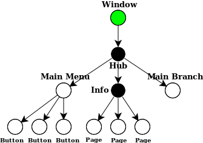

Structure
A GUI built with hgf takes the form of a tree, where each node is a StructuralComponent that is responsible for the children directly underneath it and for reporting information to its parent. For example, a typical application may be structured as below.

The application whose structure is depicted above has a root node representing the main window, with one child representing a Hub (a logical component for handling navigation by menu) with three children: a main menu, a help page, and an area where the meat of the application resides. Each child component may have further subcomponents, and so on, until an atomic component—or leaf node—is reached.
We can classify components into 3 major categories: logical, atomic, and composite.
Logical components
The module hgf.gui provides some common StructuralComponents that can be composed to build applications like the above. Some of the components are logical, like Hub. That is, all they do is oversee a collection of children and coordinate between them.
Purely Structural components
There is a special type of logical component called purely structural. A purely structural component, like Hub, connects a set of alternatives and provides a way to switch between them.
In the diagram above, the purely structural components are colored black. 'Hub' is a Hub, and 'Information' is a Sequence. The purely structural components from hgf.gui.switch are:
Hub: oversees a central node that can switch to/from every other nodeSequence: oversees a sequence of nodes that can switch to/from their next & previous
And you can create your own purely structural components by subclassing the base class Switch!
Atomic components
A handful of common atomic components (or, leaf nodes) are also provided by hgf.gui. They don't do anything interesting, and they have no children. The atomic components from hgf.gui.text, hgf.gui.image and hgf.gui.menu are, respectively:
Text: supports foreground color, font & fontsize to display textImage: an imageWidget: base class for mouse-interactive components like buttons
To create your own atomic components, you can subclass the base class StructuralComponent.
You can subclass Widget to create any component that responds to the mouse, like a scrollbar, a slider, a button, etc.
Composite components
Some components maintain children like purely structural components, but also act as concrete entities with their own functionalities like atomic components. This could be a dialog box with text and a couple of buttons, or a chess board overseeing its chess pieces. The composite components provided by hgf.gui.menu are as follows:
Button: sends a message to its parent when clickedMenu: aggregates buttons; useful as the center node of aHub
Root component
Finally, at the top of the tree, colored in green in the diagram, is the root component. This is usually Window from hgf.gui.window.